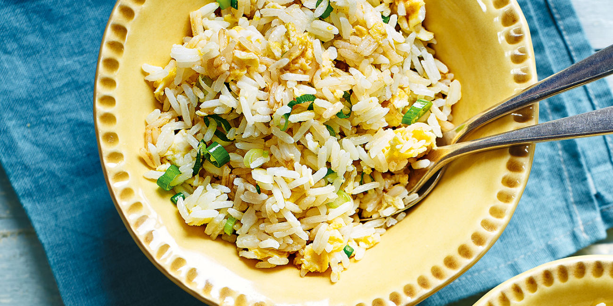

Egg Fried Rice Recipe

Quick and easy to make egg fried rice
This breakfast rice recipe is quick to make and delicious. Adjust the amount of ingredients for your hunger needs!
Ingredients
- Leftover Rice
- Eggs
- Soy sauce
- Vegetable oil
- Spring Onions
Instructions
- Heat oil in frying pan
- Separate egg yolk from the white
- Scramble the egg white and place in a separate dish
- Place egg yolk on rice and mix it in
- Chop up spring onions and sprinkle on top of rice
- Spread rice in frying pan and cook until crispy